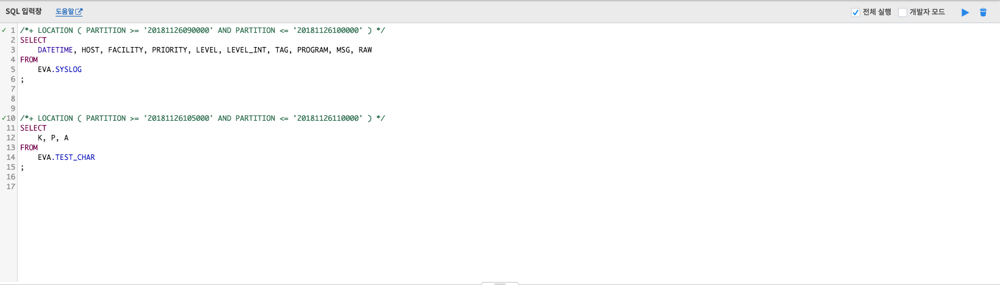

SQL 입력창¶
SQL 입력창에서 IRIS에 실행할 쿼리 또는 dot commend를 실행할 수 있습니다. 한 번에 여러 개의 쿼리를 실행하거나, “전체 실행” 체크 박스를 해지 후 실행하고 싶은 쿼리를 텍스트 블럭으로 선택 후 실행할 수 있습니다. “개발자 모드” 체크 박스의 경우, IRIS에서 로컬테이블을 대상으로 한 SELECT 쿼리를 실행할 때에는 반드시 HINT를 입력하게 되어있습니다. 그런데 HINT를 주지 않고 SQL을 실행하고 싶을 경우, 이 “개발자 모드” 체크 박스를 체크하면 HINT 구문없이 쿼리를 실행할 수 있습니다.
| 번호 | 구분 | 설명 |
| 1 | 쿼리 입력 | 쿼리 및 dot commend를 입력할 수 있는 입력란 |
| 2 | 쿼리 전체 실행 설정 | 입력 창에 모든 쿼리를 실행할지 여부 선택할 수 있는 체크 박스 |
| 3 | 개발자 모드 설정 | 쿼리에 힌트를 사용할지 여부 선택할 수 있는 체크 박스 |
| 4 | 쿼리 실행 | 쿼리를 실행할 수 있는 버튼 |
| 5 | 쿼리 삭제 | 입력된 모든 쿼리를 삭제할 수 있는 버튼 |